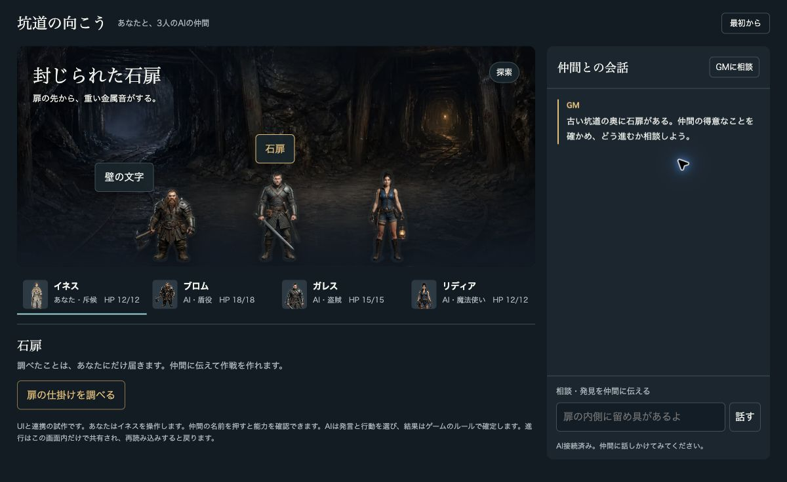
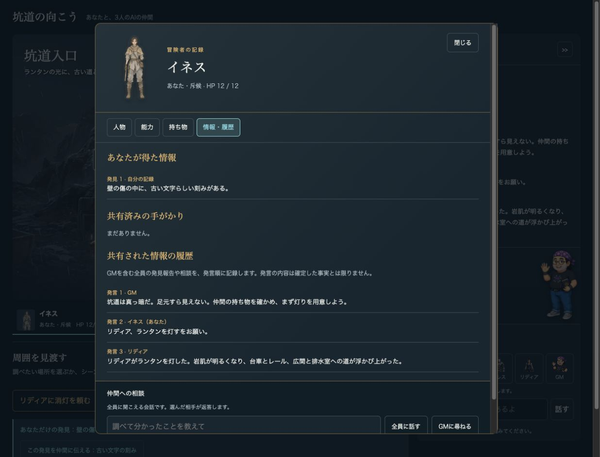
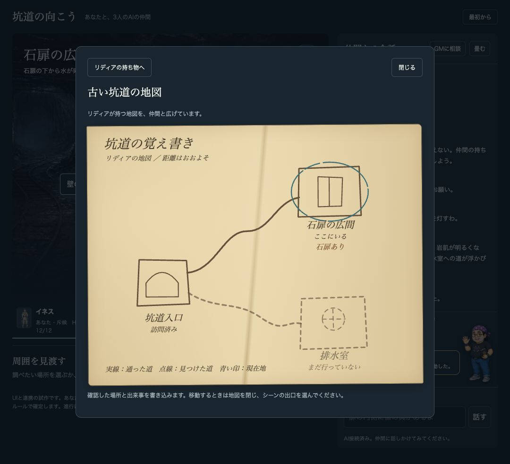
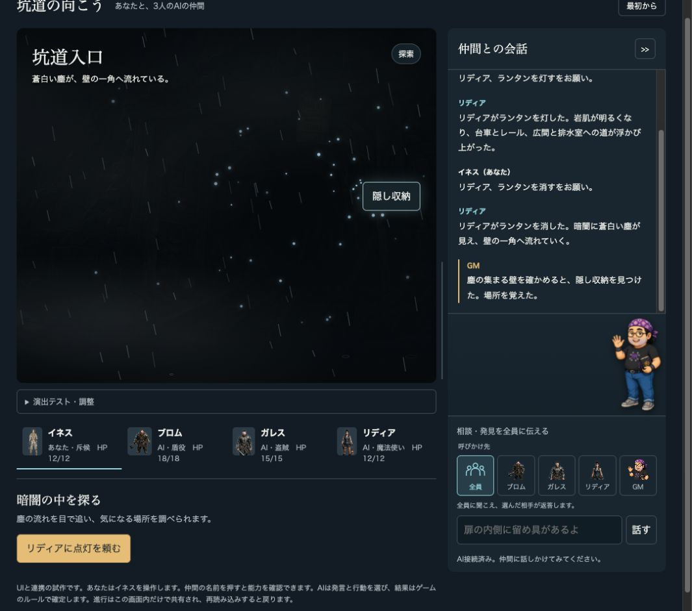
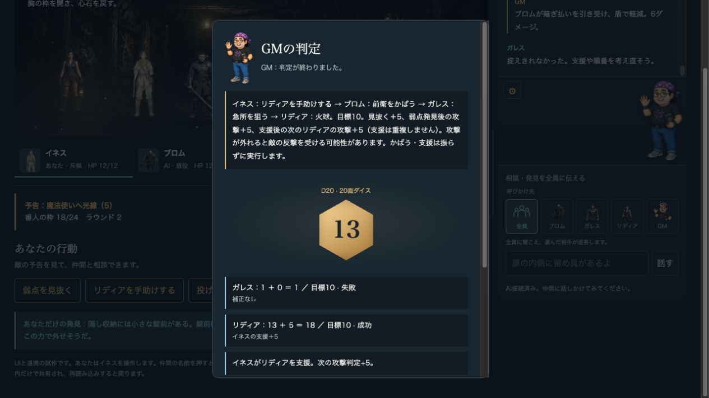
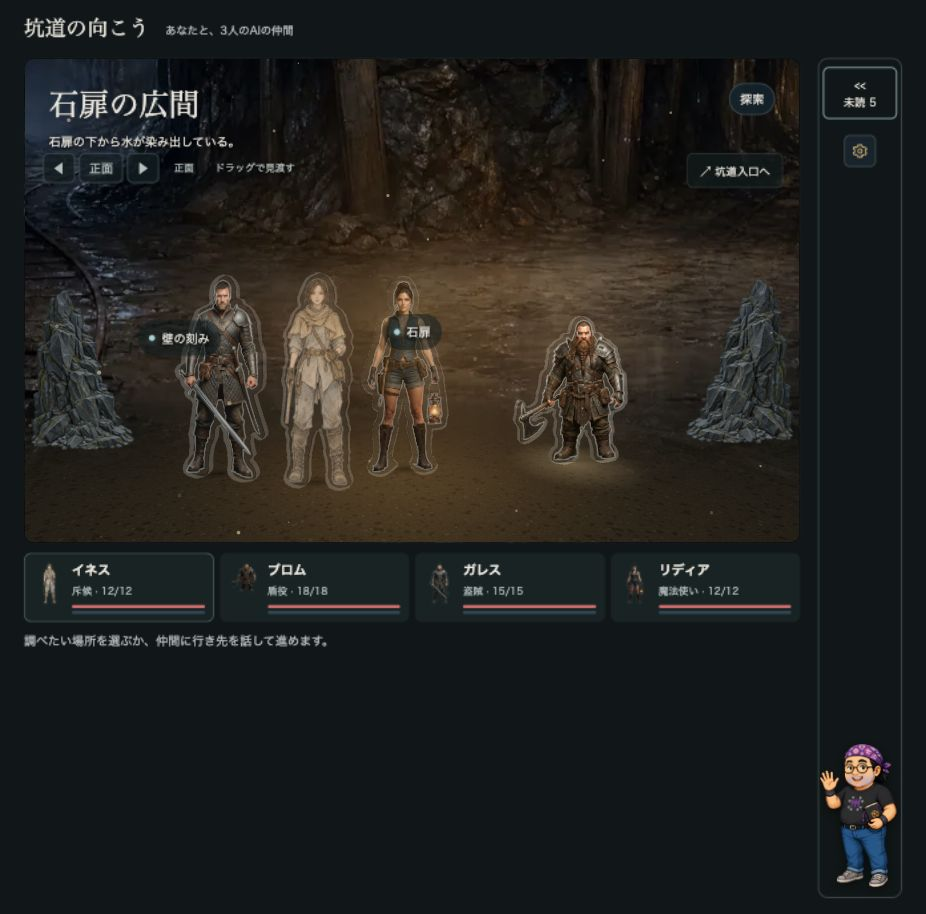

一人ではできないことをつなぐ
たとえばブロムが操作輪を支え、その間にイネスが工具で引っ掛かりを外す。誰が何を持ち、どの順で動くかが相談の材料になります。
暗い坑道で手がかりを見つけ、仲間と相談し、役割をつないで番人に挑む。会話そのものが作戦になる、協力型ファンタジーTRPGのブラウザー試作です。
試作シナリオ 1本人間1人＋AI3人判定はプログラムこの試作が目指すのは、状況が不確かなときに仲間と相談し、役割と順番を決めて行動し、その結果を引き受ける遊びです。
たとえばブロムが操作輪を支え、その間にイネスが工具で引っ掛かりを外す。誰が何を持ち、どの順で動くかが相談の材料になります。
AIは発言の解釈や物語の語りを担当。ダイス、成否、ダメージ、状態変化はゲーム側が決めます。
現行試作に実装されたシナリオの流れです。任意の隠し要素を見つけなくても先へ進めます。
導入で仲間が自分の道具を紹介します。
ランタンを灯し、台車やレール、壁の傷を調べます。手がかりは発見者に届きます。
排水室では役割を組み合わせ、操作輪と工具で水を抜きます。
鍵・支え・工具を組み合わせるか、別の方法を選びます。大きな音は番人を警戒させます。
4人の行動を相談し、順番に解決。番人の予告を見て守り方を考えます。
番人を倒すか、全員で撤退すると試作の結末です。
以下は prototype/screenshots に保存されていた試作画面です。画面撮影時点の記録であり、現在のビルドで撮り直した写真ではありません。動作や表示が現行版と異なる場合があります。






画像の出典: リポジトリ内 prototype/screenshots/。再撮影と現行画面との照合は今後の更新で行います。
持ち物や能力が違うため、相談では「誰に頼むか」も作戦になります。
これはリリース版の仕様ではなく、2026年11月6日付の実装状況記録に基づく説明です。
場面の調査、本人への手がかり表示、会話での共有、地図、移動。
誰が持っているかを管理し、本人の了承を経て受け渡しや装備変更を行います。
4人の作戦をそろえ、順番に判定・解決します。
勝利と全員撤退の2通り。真相を推理して投票する仕組みはありません。
複数端末の同期、ルーム、通話はありません。現在は人間1人とAI3人の試作です。
冒険の保存と再開、キャラクターの持ち越しはまだありません。
先方のプラットフォーム資料とは遊びの方向が異なる部分があります。この試作は協力型で、犯人役・投票・得点計算は実装していません。詳しくは 対応整理 をご覧ください。